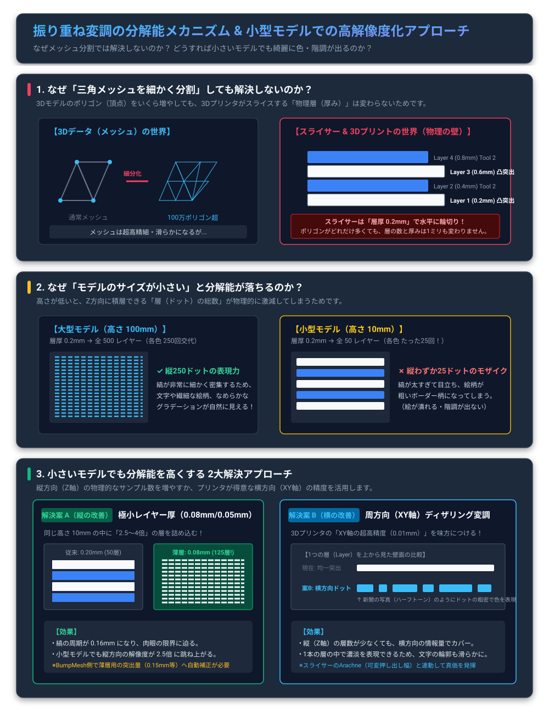

💡 要約ポイント:
1.
メッシュ細分化が無効な理由:
ポリゴン数をいくら増やしても、スライサーがZ方向に切る「層の厚み（0.2mmなど）」と「層の総数」は1ミリも変わらないため。
2.
小型モデルで荒くなる理由:
高さ10mmのモデルでは、0.2mmピッチだと全体で50層（各色わずか25層）しかなく、縦方向が25ピクセルの粗いモザイク画になるため。
3.
解決策:
縦の層を物理的に増やす「極小層厚（0.08mm以下）」か、プリンタが得意な「横方向（XY軸）のディザリング変調」を導入する。